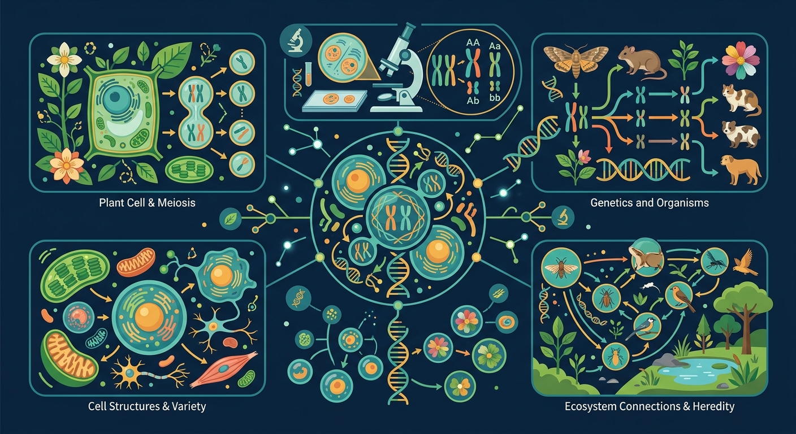

Gallery v1.0.0 · skill v7.14
遗传信息怎样被保存、表达、传递，又怎样影响性状？

已经知道：学生已掌握孟德尔分离定律，理解等位基因在减数分裂中的分离行为，并能用棋盘格分析一对相对性状的遗传比例（如豌豆高茎与矮茎的3:1现象）。
但问题是：当同时分析两对性状（如豌豆颜色与形状）时，学生常混淆'基因连锁'与'自由组合'，难以理解非同源染色体上的非等位基因为何能独立分配，导致预测子代比例时出现9:3:3:1以外的错误假设。
所以学：在育种实验中，当需要将抗病基因（位于1号染色体）与早熟基因（位于4号染色体）组合到新品种时，必须通过本课知识预测试验田里有多少植株能同时具备两种优良性状，从而规划种植规模。
先选一个卡点。后面的例子、互动和 AI 学伴都会围绕它给你最小提示。
选择或输入后，本课会围绕你的问题展开。
下列哪项是自由组合定律的直接结果？
现象入口：豌豆杂交实验中，亲代表型消失后又在子二代按比例重新出现。
机制解释：自由组合定律的本质是减数分裂时等位基因分离，非同源染色体上的非等位基因自由组合。
证据抓手：证据来自杂交实验比例、测交结果、配子类型和棋盘格推断。
变量线索：亲本基因型、配子类型、显隐性关系和基因是否独立遗传。做题时先找变量，再判断机制，最后写证据。
观察 F2 代 9:3:3:1 的性状分离比，理解两对基因独立分配现象
将 AaBb 拆分为 Aa 和 Bb 两对基因，分别计算 3:1 的分离比
减数第一次分裂后期，非同源染色体自由组合导致配子多样性
计算 AaBbCc 自交产生 aabbcc 的概率为 1/64，掌握乘法原理应用
情境：看到3:1或9:3:3:1比例时，必须先确认完全显性、独立遗传和样本量条件。
作答路径：当观察到F2代出现9:3:3:1比例时，首先确认双杂合亲本基因型为AaBb，排除连锁可能；其次检查显性完全（如无中间性状）；最后统计样本量需＞200以保证比例稳定
评分提醒：典型错误：将同源染色体非等位基因误认为自由组合（如A与B连锁时仍用9:3:3:1计算），或忽略样本量对比例的影响
先用 PhET 观察转录和翻译如何把遗传信息转成蛋白质，再回到本课的 Canvas 任务，把“信息流”与 自由组合定律 联系起来。
💡 操作提示：拖动调控元件，观察 mRNA 和蛋白质产量变化，思考“表达量变化”和“性状变化”之间的证据链。
两对独立遗传的相对性状：F2 表现型按 (3:1)×(3:1) 展开为 9:3:3:1。切换亲本组合，验证比例不变。
💡 探究任务：切换两对性状的显隐组合，观察 9:3:3:1 不变，解释“先分离、后组合”的分析方法。
只套比例不写亲本基因型和配子，是遗传题常见空答案。
只说“增加/减少”不够，要写清改变的是 亲本基因型、配子类型、显隐性关系和基因是否独立遗传 中的哪一个。
没有实验现象、曲线趋势或结构证据，答案就像猜测。
以下哪种情况不符合自由组合定律？
视频用语音和动态画面回顾本课主线：问题情境 → 机制模型 → 证据判断 → 迁移应用。
预测遗传病风险、育种杂交结果，都要先写清基因型和配子。
提交后会检查你的解释是否包含现象、机制和变量。
如果学生只说出概念名称，继续追问：题干里哪个证据最关键？这个证据对应分子、细胞、个体还是生态系统层级？如果改变 亲本基因型、配子类型、显隐性关系和基因是否独立遗传 中的一个条件，结果会怎样？这三问能把答案从背诵推进到科学解释。
写出AaBb个体产生配子的基因型组合
分析红花高茎（AaBb）自交后代中白花矮茎（aa bb）的出现概率
设计实验验证两对基因是否独立遗传，预测可能出现的结果比例
某植物两对基因（AaBb）独立遗传，F2代中重组型个体所占比例是？
学习小结：自由组合的本质是减数分裂Ⅰ后期非同源染色体随机组合，导致独立遗传的基因产生4种配子，F2出现9:3:3:1比例
先独立作答，再点选项查看对错与错因。
在孟德尔两对相对性状杂交实验中，F2代出现9:3:3:1比例的根本原因是
若将黄色圆粒(YYRR)与绿色皱粒(yyrr)豌豆杂交得F1，F1自交产生的F2中纯合子占
某植物紫花(P)对白花(p)为显性，高茎(H)对矮茎(h)为显性。PpHh个体自交，后代中表型不同于亲本的个体占
两对基因的遗传符合自由组合定律的条件是这两对基因位于____上。
答案：非同源染色体
非同源染色体上的非等位基因才能自由组合
基因型为AaBb的个体产生AB配子的概率是____。
答案：1/4
两对基因独立分离，A与B组合概率为1/2×1/2=1/4
关于自由组合定律的正确表述是
设计实验验证玉米籽粒颜色(紫色/白色)和形状(饱满/皱缩)的遗传是否符合自由组合定律
❓ 为什么我爸妈都是双眼皮，我却是单眼皮？
❓ 孟德尔说的9:3:3:1比例到底怎么用？
❓ 考试遇到两对性状的题就懵，怎么办？
学完这一课，这些问题你都能自信地回答。
✅ 必须位于不同对同源染色体上
💡 混淆基因连锁与自由组合
✅ 先确认两对基因是否独立遗传
💡 未理解自由组合的前提条件
口诀：同源分离不干扰，非同源组新花样
类比：就像洗牌发牌：同花顺必须同花色（分离定律），但不同花色的牌可以任意组合